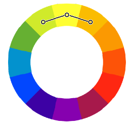
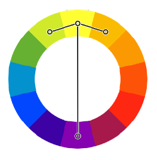

O Poder das Cores - ( CAP. 13 )
Aula 3 - Harmonia de Cores
* Para Montar uma paleta de Cores deve-se Utilizar de 3 a 5 Cores.
Cores Complementares

Geralmente Utilizado para Diferenciar o Fundo do Texto.
Cores Análogas

Utilizado para Criar as demais cores do Site
Cores Análogas mais Uma Complementar

Forma Básica de criar uma Paleta de Cores
Voltar para página Inicial